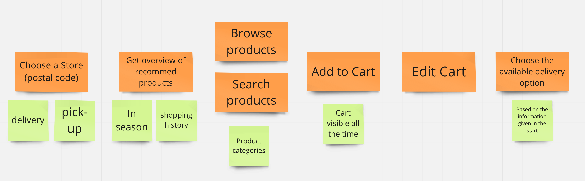

How to improve the shopping experience in grocery apps? - Redesigning K-Ruoka app
Own UX project
Background
I have tried few times grocery shopping online due to COVID situation. I have had some problems making the order becuase I have been confused with either choosing the shop or browsing the items. I have tested the service with Foodie and K-Ruoka. In mobile I like Foodie and in desktop I like K-Ruoka. So, I tried to combine the best from each and also benchmark how Amazon have designed the grocery shopping.
Goal
My goal was to ideate a new concept and simplify user journey in online grocery shopping because I felt that the process of choosing a store, browsing and picking items to shopping cart and purchasing wasn't straightforward enough. I also felt that there were opportunities for the businesses to promote their offering and use the personal shopping data better. My idea of a solution and concept is more to the user who likes to browse the offering.
Research
I started the project by using both Foodie and K-Ruoka in order to get familiar with the services. I have made an order with both of the services in desktop and then tested both apps.
While testing and making an order I wrote down some notes and differences with the two services while I was browsing and searching items. Here are my thougths on the UX in Foodie (dektop)
- Choosing the store is confusing because it's easy to just start shopping and only after then realize the store is wrong. The logging in also changes the store.
- Browsing recipes and then adding those to cart is done pretty automatically and it changes for example 6 potatos to a one bag of potatos for the shopping cart.
- Some improvments could be made to incomplete search results, because "nachos" didn't find "tortilla chips" and as a normal consumer I don't know what the diffrence is.
- The search results also appear a bit too slow. There was few times when I thought it didn't find the item I was searching because I didn't scroll and wait enough. In addition the search happen only after I press enter or click search.
- The search result list could be personalized because the "minced meat" search query gives me the dog's minced meat item first.
- I can sort the search result for example based on price which is good.
Screenshot of Foodie.
After I used Foodie I tried K-Ruoka (desktop) and wrote down notes and made some comparison between with Foodie.
- Choosing the shop is effortless because of the overlay that opens. The chosen shop is also more visible which reduces errors.
- Browsing receips is a bit disconnected from the actual shopping. It gives more choices but it doesn't communicate with the items as well as the Foodie because it suggest items which are not available in the chosen store. In addition, the service reminds the user to choose the shop even though the store is chosen which confused me.
- The search results download fast and appear while scrolling better than in Foodie. The search results appear also while typing.
- I can't sort the search result by price which is a downside but I can filter the results by categories.
- The shopping cart is visible all the time and I don't need to click it open from somewhere.
- Hierarchy of the navigation is clear.
Screenshot of K-Ruoka.
Design process
After the research I decided to redesign the grocery shopping experience in K-Ruoka app because I wanted to make the journey from deciding to shop online to purchase easier. Also, I felt that grocery shopping in the app was logically a bit different from the desktop.
Use cases: I started te redesign by writing down use cases based on my test usage.
As a user, I want to...
- first choose the store where I want to by my groceries.
- see which items are my favorite and most bought.
- browse and filter different categories.
- sort the items.
- search for a specific item.
- add items to my cart.
- check my cart and edit it.
- have an easy journey from cart to purchase.
- choose between delivery and pick up.
Benchmarking: In addition I benchmarked Amazon's way of grocery shopping in Whole Foods and in Amazon Fresh. I liked the design, because it gives a visual overview of the items and also highlights some of the categories which can be used for growth hacking.

Whole foods in Amazon.
User journey: Based on the use cases I then wrote down a simplified steps the user does while shopping from choosing the shop to placing the order. I used this then as a base when I started to create the wireframes.
Simplified user journey.
Wireframes: The on issue I found out was that picking a store is sometimes confusing and also easily forgetten. I have also noticed this while observing other people using the services. Currently the user can either start shopping by using an old shopping list which takes the user to the specific store where the list was created or the user can start doing online order without ready made list which takes the user to the store choosing view. I wanted to simplify this, so I decided to design the first phase to always be choosing of the store.

Choosing a store current way and my solution.
Currently, if the user chooses to use an old shopping list it doesn't move the items to the cart. My idea is that after the store is chosen the user could choose old shopping list which would create a shopping cart based on the list or start a new, but for now I skipped it.
In the groceries home page the user gets a quick overview of different sections which could be personalized and also used as promotion space. The search bar, shopping cart, store and the option to search based on categories is always visible. Currently, the user sees the most bought items and the different categories open from the menu.
Groceries home view current way and my solution.
If the user chooses to browse products based on product categories the view is similar with the home view and the user can filter the results by sub-categories. In the product category page the service could again promote the most bought items and also show for example what's in the season. Currently, the user chooses the category and sub-category from the menu which opens the product list view and unselecting directs the user to the most bought view.
Category view current way and my solution.
If a user selects sub-category the products are then showed as a list view. Going back or unselecting a sub-category would show again the category view.
Sub-category view and a product list
Adding products to the shopping cart happens by tapping the plus icon. User can view her shopping cart by tapping the shopping cart icon in the top right. From there the user can also edit the cart more easily because the action area is consistent with the other buttons. From the cart view the user can proceed to checkout. Additionally, the cart should show the cost of the purchase. Currently, the user can see their shopping list by clicking the back arrow and proceed from there to the checkout.

Editing shopping cart and proceeding to checkout.
After the checkout in the current K-Ruoka app the user can choose the delivery method and check if there is home delivery available. I removed the checking option because in the beginning the user has already decided the store based on the delivery method and location. The user can now choose between the home delivery and pick up and if the store doesn't support for example home delivery the only option is the pickup.
Choosing the delivery option.
If the user chooses home delivery the journey would go as in the desktop version. The user would write her postal code and check the available time slots and choose the delivery time. In the pickup, the user would also choose the time. Then the user would choose the payment method and finalize the delivery.
For this practice, I haven't yet designed those steps and I find them pretty good already in the app.
Result
I hopefully improved the buying process and simplified a bit. I also tried to make the process more aligned with the desktop version to reduce confusion and opportunities for user errors.
Aftermath
It was interesting to get more familiar with the online grocery shopping. However, I feel that home delivery is quite expensive for a one-person households even though it's easier to buy food for a longer time if there is no car available to use. It was interesting to see that in Foodie the collecting of items costed more than the actual delivery. I think there are a lot of opportunities to improve the online grocery shopping and make it more appealing for one-person households.
This was my first "redesign" challenge and it was interesting and fun to do this. Even though I didn't make anything high-fidelity I feel that the concept idea is undertandable and of course there is always something to improve even with this one.